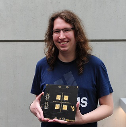

Special Session II
Date: Friday - October 15, 2021
Time: 11:40 - 13:00
Title: Open Source On-Chip Communication from Edge to Cloud: the PULP experience
Chair: Davide Rossi (University of Bologna)
Format: Four talks
Abstract:
High performance and extreme energy efficiency are growing requirements for wide class of
applications ranging from ultra-low power IoT end nodes to high performance computing. While
parallelism and heterogeneity are well established techniques to deal with these challenges in the
high-performance domain, an increasing amount of embedded systems are embracing the same approach
to deal with the increasing complexity of near-sensor analytics applications. However increasing the
number and capabilities of compute cores poses a high-pressure on the on-chip communication network,
which has to sustain the extreme bandwidth generated by multiple powerful engines. In this special
session we propose an open source ecosystem for building computing systems from edge to cloud. The
sessions starts with a presentation of the Parallel Ultra-Low-Power project, an open-source platform
for near-sensor processing, followed by the presentation of an open-source AXI4 infrastructure and
its exploitation heterogeneous application processors and HPC many-core system.
Agenda
The special session starts at 11:40 EDT on Friday - October 15, 2021
20 mins presentation time (18mins talk + 2mins Q&A)
[11:40 - 12:00]
I. PULP: An Open-Source RISC-V Based Multi-Core Platform for In-Sensor Analytics
Davide Rossi (University of Bologna)
[12:00 - 12:20]
II. An Open-Source Platform for High-Performance Non-Coherent On-Chip Communication
Thomas Benz (ETH Zürich)
[12:20 - 12:40]
III. HERO: A Heterogenous Research Platform to Explore HW/SW Codesign and RISC-V manycore
accelerators
Luca Bertaccini (ETH Zürich)
[12:40 - 13:00]
IV. Manticore as an NoC Case Study: A 4096 Chiplet-based Architecture for Ultra-Efficient
Floating-Point Computing
Florian Zaruba (ETH Zürich)
Talk I
Date: Friday - October 15, 2021
Time: 11:40 - 12:00
Title: Open Source On-Chip Communication from Edge to Cloud: the PULP experience
Speaker: Davide Rossi (University of Bologna)
Abstract:
The "internet of everything" envisions trillions of connected objects loaded with high-bandwidth
sensors requiring massive amounts of local signal processing, fusion, pattern extraction and
classification. While silicon access cost is naturally decreasing due to the twilight of the
Moore's law, the access to hardware IPs still represents a huge barrier for innovative start-ups
and companies approaching the market of IoT. In this context, the recent growth of high-quality
open source hardware IPs represents a promising way to surpass this barrier, paving the way for a
number of exciting applications of open-source electronics. In this talk, I will describe the
evolution of the open-source Parallel-Ultra-Low-Power (PULP) platform as well as opportunities and
challenges for next generation open source computing systems.
Speaker Bio:
Davide Rossi, received the PhD from the University of Bologna, Italy, in 2012 where he currently
holds an assistant professor position. His research interests focus on energy efficient digital
architectures in the domain of heterogeneous and reconfigurable multi and many-core systems on a
chip. This includes architectures, design implementation strategies and runtime support to address
performance, energy efficiency, and reliability issues of both high-end embedded systems and
ultra-low-power computing platforms targeting the IoT domain. In these fields, he has published
more than 100 paper in international peer-reviewed conferences and journals. He is the recipient of
the 2019 IEEE TCAD Donald O. Pederson Best Paper Award, 2020 IEEE Transactions on Circuits and
Systems Darlington Best Paper Award, 2020 IEEE Transactions on Very Large Scale Integration Systems
Prize Paper Award.
Talk II
Date: Friday - October 15, 2021
Time: 12:00 - 12:20
Title: An Open-Source Platform for High-Performance Non-Coherent On-Chip
Communication
Speaker: Thomas Benz (ETH Zürich)
Abstract:
Modern SoCs rely on a scalable and efficient on-chip communication infrastructure. With a steady
increase of the core count, heterogeneity of the components, and the on-chip and off-chip bandwidth,
on-chip communication gains importance. Despite the key importance of on-chip communication
infrastructure, almost all communication standards are closed or cannot be used royalty-free. ARM's
Advanced eXtensible Interface (AXI) is one exception to this rule. But even with the AXI standard
being open, most implementations are propriety and closed-source rendering them of little benefit
for our open-source research. At IIS, we are working towards a modular, energy-efficient,
topology-agnostic, high-performance, free and open-source implementation of ARM's AXI4 on-chip
protocol. The resulting IPs are used in all our research platforms from simple microcontroller to a
1024-core ML training accelerator. We evaluate our modules standalone and in our research platforms
to verify their functionality and explore key microarchitectural trade-offs between area,
throughput, latency, and energy-efficiency.
Speaker Bio:

Thomas Benz received his BSc and MSc degree in electrical engineering and information technology
from ETH Zurich in 2018 and 2020, respectively. He is currently pursuing a PhD degree in the Digital
Circuits and Systems group of Prof. Benini. His research interests include energy-efficient
high-performance computer architectures, memory systems, and the design of ASICs.
Talk III
Date: Friday - October 15, 2021
Time: 12:20 - 12:40
Title: HERO: A Heterogenous Research Platform to Explore HW/SW Codesign and RISC-V
manycore accelerators
Speaker: Luca Bertaccini (ETH Zürich)
Abstract:
Heterogeneous systems on chip integrate a general-purpose multicore CPU with programmable manycore
accelerators on a single die to combine the versatility of host application-class processors with
the energy efficiency of highly parallel domain-specific accelerators. In this talk, we present
HERO, a heterogeneous research platform prototyped on a Xilinx Zynq UltraScale+ FPGA and coupling an
ARM Linux-capable host CPU with a PULP acceleration cluster. HERO’s software stack allows for
transparent accelerator programming based on OpenMP. The HW/SW infrastructure of HERO results in a
run time overhead lower than 10% with respect to manually written code PMCA code operating on its
private memory.
Speaker Bio:
Luca Bertaccini received his Master's degree in Electronic Engineering from the University of
Bologna in 2020. He is currently pursuing a PhD at the Integrated Systems Laboratory (IIS) of ETH
Zurich in the Digital Systems group led by Prof. Luca Benini. His research interests include
hardware accelerators and heterogeneous architecture.
Talk IV
Date: Friday - October 15, 2021
Time: 12:40 - 13:00
Title: Manticore as an NoC Case Study: A 4096 Chiplet-based Architecture for
Ultra-Efficient Floating-Point Computing
Speaker: Florian Zaruba (ETH Zürich)
Abstract:
Data-parallel problems demand ever-growing floating-point (FP) operations per second under tight
area- and energy-efficiency constraints. In this talk, we will present Manticore, a general-purpose,
ultra-efficient, chiplet-based architecture for data-parallel FP workloads. We have manufactured a
prototype of the chiplet’s computational core in Globalfoundries 22FDX process and demonstrate more
than 5x improvement in energy efficiency on FP intensive workloads compared to CPUs and GPUs,
despite being manufactured in a 2-3 generation older technology node. The Manticore architecture is
able to achieve up to 190 Gflop/sW for FP64 in maximum efficiency mode. The main focus of this talk
will be on how we use our non-coherent, AXI-based, infrastructure to efficiently schedule data
movement in those complex NoCs and the corresponding infrastructure to generate such networks.
Speaker Bio:

Florian Zaruba was born in Vienna, Austria, in 1992. He received his BSc degree from TU Wien in 2014
and his MSc and PhD from the Swiss Federal Institute of Technology Zurich in 2017 and 2021. He is
currently a postdoctoral researcher at the Integrated Systems Laboratory. His research interests
include the design of very large-scale integration circuits and high-performance computer
architectures.